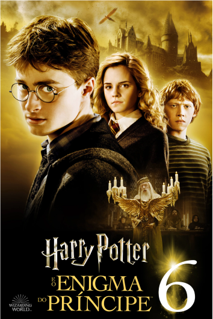

Livro 5
Harry Potter e a Ordem da Fênix
Resumo
Durante mais um verão passando as férias na casa dos tios, Harry Potter e seu primo Dudley são atacados por dois dementadores perto de casa à noite. Para salvar a si e ao primo, Harry usa um feitiço do patrono e ao chegar em casa carregando o primo, Harry recebe uma carta do Ministério da Magia comunicando sua expulsão da Escola de Magia e Bruxaria de Hogwarts por usar a magia fora da escola, mas logo em seguida essa decisão é rescindida em outra carta, que comunica que Harry deverá comparecer a uma audiência no Ministério dali a algumas semanas. Alguns dias depois desse evento, Harry é resgatado da casa dos tios por um grupo peculiar de bruxos liderado pelo ex-auror Olho-Tonto Moody e o ex-professor de Defesa Contra as Artes das Trevas de Harry, Remo Lupin.
Esse grupo o leva para o Largo Grimmauld, 12, uma casa bruxa sombria e mofada que pertence ao padrinho de Harry, Sirius Black e que também serve como a sede da Ordem da Fênix, uma organização secreta de bruxos adultos liderados por Alvo Dumbledore que lutam contra Voldemort e os Comensais da Morte. Durante sua estada no Largo Grimmauld, Harry, Rony e Hermione são informados parcialmente sobre os planos e ações do Lorde das Trevas, que ele está buscando avidamente uma arma que poderia alçá-lo ao poder. Harry descobre então sobre a campanha difamatória que o Ministério e o Profeta Diário estão fazendo contra ele e Dumbledore.
Em um julgamento exaltado conduzido pelo Ministro da Magia, Cornélio Fudge, Harry consegue ser inocentado das acusações de usar a magia fora da escola por ter sido uma situação extrema com risco de morte. Já no retorno a Hogwarts, Harry e seus amigos descobrem que Dolores Umbridge, até então subsecretária sênior do Ministro da Magia e que havia sido jurada em seu julgamento, foi designada como a nova professora de Defesa Contra as Artes das Trevas em cumprimento a um Decreto Educacional do Ministério, demonstrando assim que o Ministério estaria interferindo na Escola.
Umbridge institui um regime de ensino teórico e passivo, pois como mais tarde é descoberto por Harry, ela e o Ministério acreditavam que Dumbledore estivesse organizando um exército para derrubar Fudge e assumir o controle do Ministério. As desavenças entre ela e Harry começam já na primeira aula e Harry recebe um castigo violento por sua rebeldia: É obrigado a escrever "Eu não devo contar mentiras" com uma caneta que corta a pele de sua mão e usa seu sangue como tinta. Como reação ao autoritarismo de Umbridge, Harry, Rony e Hermione formam um grupo de estudos de Defesa Contra as Artes das Trevas, a Armada de Dumbledore. Esse grupo, que incluía alunos da Grifinória, Lufa-Lufa e Corvinal se reunia na Sala Precisa para praticar feitiços de proteção sob orientação de Harry.
Harry, que se vê frustrado pelo autoritarismo de Umbridge e pelo distanciamento absoluto de Dumbledore, tem sonhos frequentes com um corredor e uma porta que sentia já ter visto antes, mas que não conseguia se lembrar aonde. Certa noite dormindo, às vésperas das férias de Natal, Harry tem uma visão vívida da cobra de Voldemort, Nagini, atacando o Sr. Weasley, pai de Rony, no mesmo corredor de seus sonhos misteriosos. Harry alerta a professora Minerva McGonagall, que o leva a sala do diretor, juntamente com Rony e os irmãos. Dumbledore entra em ação e o Sr. Weasley é resgatado e levado ao Hospital St. Mungus. Harry, que se sente ignorado por Dumbledore durante todo essa ocasião, sente uma vontade repentina de atacá-lo quando seus olhares se encontram no momento em que ele e os amigos estão tomando uma Chave de Portal para o Largo Grimmauld. Ao retornar para a escola, Harry começa a tomar aulas de Oclumência (arte mágica de defesa da mente contra possíveis invasões ou interferências mágicas) com o professor Severo Snape por ordem de Dumbledore.
Perto da Páscoa, Marieta Edgecombe trai a Armada de Dumbledore e conta para Umbridge tudo sobre as reuniões do grupo, o que ativa uma azaração lançada por Hermione para impedir a traição dos membros do grupo e desfigura o rosto da aluna da Corvinal. Apesar do aviso de Dobby, boa parte dos alunos do grupo são capturados, inclusive Harry, que é levado ao gabinete do diretor, onde estava a comitiva do Ministro da Magia, que tinha ido a escola para expulsar Harry por desobedecer o Decreto Educacional que proibia a reunião ou associação de alunos sem a permissão de Umbridge. Dumbledore assume a responsabilidade pelo grupo e recebe ordem de prisão de Fudge. Porém, quando os aurores que trouxera se aproximaram de Dumbledore para prendê-lo, o diretor nocateou-os a todos e foge. Umbridge se torna diretora por Decreto, mas não recebe apoio dos professores ou dos alunos (exceto os alunos da Sonserina).
No último dia dos exames, Harry tem uma visão de Sirius sendo torturado por Voldemort no Departamento de Mistérios. Ele tenta usar a lareira da sala de Umbridge para se comunicar com o padrinho e garantir que a visão que tivera era real. Monstro, que está na cozinha da casa de Sirius e recebe a mensagem de Harry, mente para o garoto confirmando que o padrinho tinha sido capturado. Nesse momento Umbridge captura Harry e seus amigos, com a ajuda de um grupo de alunos da Sonserina. Enganando Umbridge, Harry e Hermione a levam para a floresta, onde ela entra em conflito e é capturada pelos centauros.
Fugindo da floresta, Harry e Hermione encontram Rony, Gina, Luna e Neville e os seis voam para o Ministério da Magia em testrálios para salvar Sirius. No Departamento de Mistérios, na Sala das Profecias, Harry descobre uma pequena esfera de vidro marcada com seu nome na prateleira. Então, de repente Harry e seus amigos se veem cercados pelos Comensais da Morte, percebendo enfim que a visão era falsa e tudo não passara de uma armadilha. Liderados por Lúcio Malfoy, os Comensais atacam os adolescentes para roubar a esfera, que é revelada como sendo uma profecia sobre o garoto e Voldemort e a arma que o Lorde buscara com tanto empenho. Os adolescentes dão combate enquanto fogem e um a um vão sendo avariados, até Harry ser acuado na Sala da Morte pelos Comensais. Nesse momento uma parte da Ordem da Fênix chega ao local e inicia-se um combate feroz. Dumbledore aparece logo depois e os Comensais fogem à sua chegada, mas são recapturados facilmente pelo bruxo. Sirius é morto pela prima Belatriz Lestrange, que foge do Departamento de Mistérios, mas é perseguida por Harry, que a alcança no Átrio e lança a Maldição Cruciatus nela. Voldemort, lendo a mente de Harry, percebe que seu plano fora frustrado e aparata no Átrio para matar Harry. No momento em que lança a maldição, Dumbledore aparece no local e desvia a maldição de Voldemort e inicia um duelo com o Lorde. Ao final do duelo, Voldemort possui Harry, na esperança de Dumbledore matar o garoto. Harry, sentido uma dor lancinante, pensa em Sirius e o amor pelo padrinho o preenche e Voldemort detém sua possessão, pois não conseguia suportar o contato com uma mente preenchida com amor. Antes de fugir, Voldemort é visto pelos aurores e pelo Ministro, que é então forçado a admitir o retorno do Lorde.
Retornando a Hogwarts, na sala do diretor, Dumbledore conta a Harry os detalhes e motivo do ataque de Voldemort em sua infância: uma profecia, feita antes do garoto nascer pela professora Sibila Trelawney para Dumbledore que predizia o nascimento de alguém que poderia derrotar o Lorde das Trevas. Sem conhecer o conteúdo completo da profecia, Voldemort decidira atacar Harry ainda bebê, pensando estar impedindo a profecia de ser concretizada. Dumbledore também explica porque deve voltar a casa dos tios ao menos uma vez por ano enquanto não completar 17 anos: O diretor lançara um feitiço protetor que usava o sacrifício da mãe de Harry, Líllian como um escudo contra Voldemort e que fora selado por sua tia Petúnia, única parente viva de Harry, ao aceitá-lo em sua casa.
Poster do Filme
Trailer
Curiosidades
- É o livro mais longo da série, com mais de 257.000 palavras. Rowling disse que o livro ficou tão grande porque ela queria incluir muitos detalhes sobre o Ministério da Magia e a luta contra Voldemort.
- A personagem Dolores Umbridge, que é uma das principais vilãs deste livro, foi inspirada em uma professora que J.K. Rowling teve na escola, que ela descreveu como sendo "o terror dos alunos". Rowling disse que queria criar um personagem que representasse a autoridade opressiva.
- O livro apresenta a Sala da Profecia, que é um importante objeto da trama. Rowling disse que a ideia da sala foi inspirada em uma lenda grega sobre uma jarra que continha todos os males do mundo. A ideia era que a Sala da Profecia contivesse informações cruciais para a luta contra Voldemort.
- O livro contém uma cena muito emocionante em que Harry se comunica com seu padrinho, Sirius Black, através da rede de lareiras. Rowling disse que essa cena foi inspirada em uma experiência pessoal que teve quando seu avô morreu. Ela disse que sentiu a presença dele em sua casa e ficou emocionada com a sensação de conexão que teve.